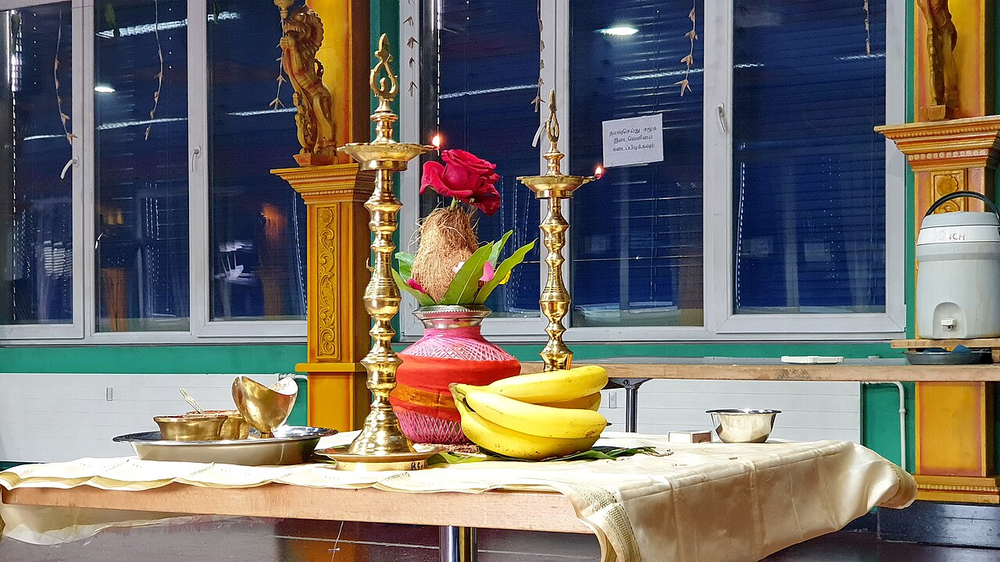

Community
Tempel, Vereine, Schulen und Feste der Gemeinden in Deutschland, Österreich und der Schweiz.


Emsdetten: Tamilischer Kultur- und Sportverein stellt sich im Integrationsbeirat vor
Der 2025 gegründete TKS e.V. hat mehr als 30 Mitglieder, plant Feste zu Deepavali und Thai Pongal und sucht ein eigenes Vereinsheim.
Emsdetten
Aus den Gemeinden

Foto: Rainer Halama / Wikimedia Commons, CC BY-SA 4.0 Steinmeier beim Tempelfest in Hamm-Uentrop: Dank an die tamilische Minderheit
Als Ehrengast sprach der Bundespräsident neben dem Sri-Kamadchi-Ampal-Tempel über Nachbarschaft, die zur Freundschaft wird, und rief zum Schutz der Religionsfreiheit auf..
Hamm

Foto: Roland zh / Wikimedia Commons, CC BY-SA 3.0 
Foto: 18quirl08 / Wikimedia Commons, CC BY-SA 4.0 Berlin: Sri Ganesha Hindu Temple an der Hasenheide geweiht
Mit Wasser aus Spree und Ganges wurde der Turm des neuen Tempels in Neukölln übergossen.
Berlin

Foto: Björrn Sothmann / Wikimedia Commons, CC BY-SA 4.0 Leuk: Tausende tamilische Katholiken feierten Lourdes-Fest und 20 Jahre Mission Aargau
Rosenkranz, Festmesse und Marienprozession: Die Tamilische Katholische Mission Aargau beging in Leuk zugleich ihr 20-jähriges Bestehen..
Leuk


Übermorgen
Per WhatsApp schickenDiwali in Basel mit dem Basel Tamil Sangam
Aula Lysbüchel, Basel
In 8 Tagen
Per WhatsApp schicken